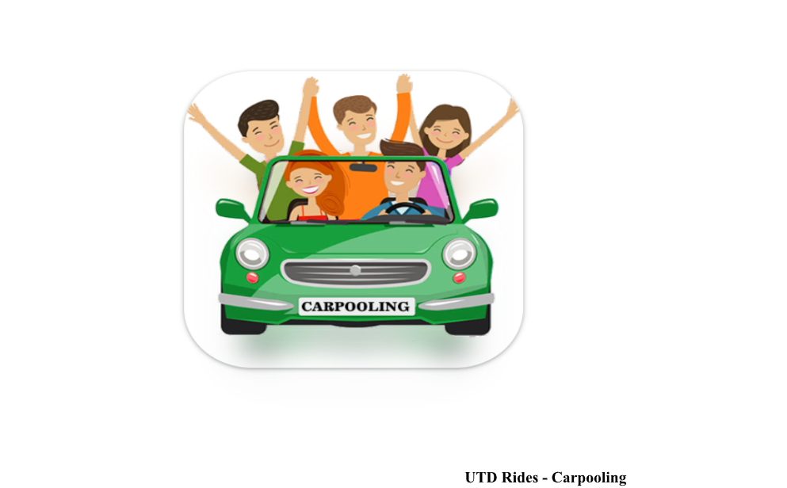

Product Customization & Management
Professional Experience - Temenos Triple A Plus
Temenos is a banking software company that provides digital and core banking solutions to financial institutions worldwide. Their products and services help banks and other financial institutions to operate efficiently, reduce costs, and improve customer experience. Some of their popular products include Temenos T24 Core Banking, Temenos Infinity, and Temenos Payments. The company was founded in 1993 and is headquartered in Geneva, Switzerland.
Temenos Triple A Plus is a comprehensive banking solution that is designed to support wealth management and private banking businesses. It includes a suite of modules that cover all aspects of private banking, including portfolio management, client relationship management, order management, risk management, and compliance. Temenos Triple A Plus enables banks to streamline their operations, improve efficiency, and enhance the customer experience. The solution is highly customizable and can be tailored to meet the specific needs of each bank.
Product Customizations
As Senior Product Consultant, I was responsible for the technical implementation and customization of the temenos product suitable for the business that we were working with
The below were the changes made as part of it:
1. Customize the product UI to fit the need of the client - This involved working on the TAP scripting to add a feature or add a constraint to the feature
2. User Defined Field creation - This involved modifying the existing database structure provided by temenos to fit the additional need of the customer (For example creating a drop down/permitted value for a field in the tool UI) by following a standard procedure given by Temenos.
3. Product Integration - This involved creating components in IBM WTX to take data from various sources - Back office which is responsible for sending static (portfolio, instrument etc) and dynamic data(transactions etc) in different file formats (csv, json, excel, API etc) and converting it into a format acceptable by the product
System Analysis & Project Management
Academic Project -UTD Rides- UTD
Objective:
Hence it would be great to have an alternative to the above. One of the possible solutions is to
create a carpooling system.
1. To build a carpooling application for UTD students. Carpool is revolutionary and fun way
to commute. Great way to make connections and ensure secure rides. A secure ride can
be ensured by checking the student ID of the students with graduation date and driving
license of the drivers additionally.
2. Whether you are a car owner or a rider, just post your ride details on application, the
date and the route of the ride and it will match you with co-riders on your way.
3. If the same route is not available, suggest a ride in the nearby location for the same
timeslot.
Scope:
1. Estimated cost is approximately $7000 for the entire system.
2. Time needed for completion is estimated to be 6 months.
4. The system would require severs to calculate and match the rides in the same/nearby
area.
5. The system would also fetch data from GPS to find the passengers in the nearby area.